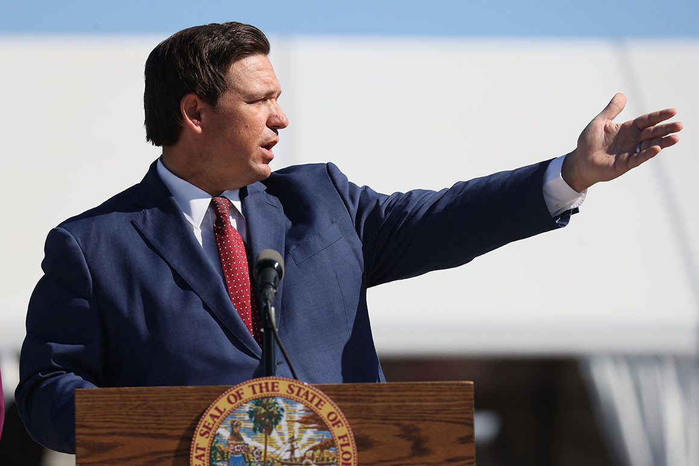

Florida restores more rights for felons
The Florida clemency board approved changes proposed by Gov. Ron DeSantis to previous rules that also removed the five-to-seven-year period felons are required to wait after applying to have these rights restored.
Florida Governor Ron DeSantis speaks during a press conference. | Joe Raedle/Getty Images
By GIULIA HEYWARD 03/11/2021 03:30 PM EST
Florida on Wednesday approved sweeping changes to restore rights for felons, including allowing them to run for public office and serve on juries once they complete their sentences and pay any court-mandated fines.
The Florida clemency board approved proposed by Gov. Ron DeSantis to previous rules that also removed the five-to-seven-year period felons are required to wait after applying to have these rights restored.
"I believe that those who have had their voting rights restored under Amendment 4, it makes sense to restore their other rights," DeSantis said.
The changes undo measures imposed a decade ago by then-Gov. Rick Scott and then-Attorney General Pam Bondi, who tightened restrictions on felons.
Advocates have tied rights restoration to recidivism: A 2011 study by the Florida parole commission found that felons were three times less likely to reoffend once their rights were restored.
“We challenged them, and they’re stepping into that,” Neil Volz, executive director of the Florida Rights Restoration Coalition, told POLITICO ahead of the meeting. “I think there’s been an incredible explosion of democracy after Amendment 4 passed. And we see this as a victory, when you look at things from the long term.”
Just two years ago, an overwhelming majority of residents approved Amendment 4, which cleared a path for the formerly incarcerated to receive their voting rights back. However, Republican-controlled Legislature later passed a law that made receiving their voting rights back impossible, unless felons had paid off all of their outstanding court fees, fines and restitution. As a consequence, only 67,000 felons had successfully received their voting rights back as of October.
And those same financial barriers are presented in the new clemency process. Felons will still be required to pay off all of their outstanding balances before they’d be able to apply to run for office or attend jury duty.
Commissioner of Agriculture Nikki Fried, the only statewide-elected Democrat, proposed an amendment that would allow felons who can’t afford to pay their outstanding fees to still be eligible to have their rights restored.
“What about the vast majority who can’t afford the fines, fees, court costs and money that is owed to the government?” Fried asked during the meeting. “My counter proposal to this action would be adding a sworn affidavit of indigency.”
Fried’s proposed amendment was not accepted.
Felons in the state still can’t receive their right to firearms. But a Republican senator has just filed SB 1932, which would restore those rights to nonviolent offenders.
File Under: The Fifty